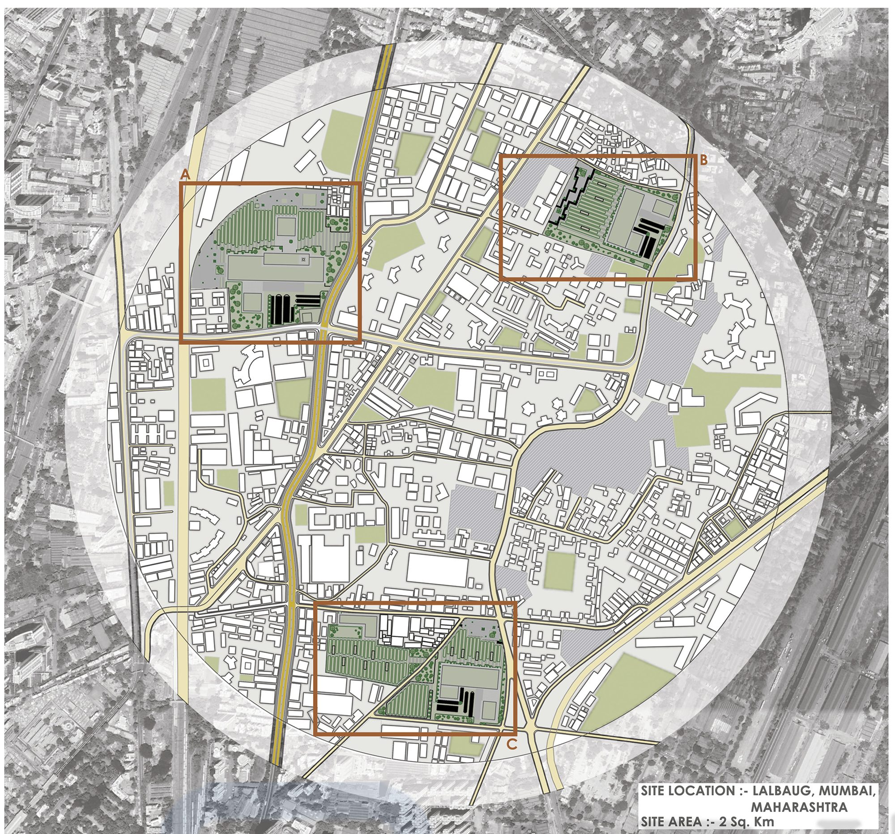
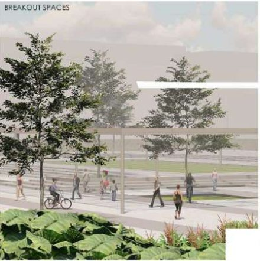
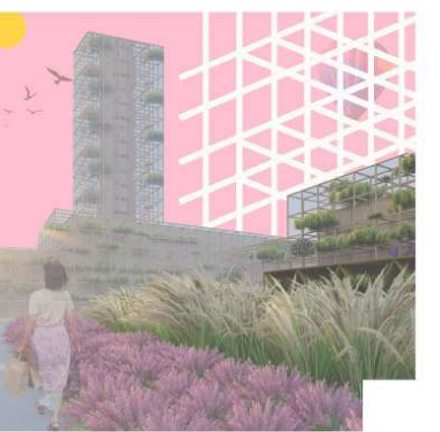

Work / 06 · Competition
Urban Agroviands
A productive public realm for Mumbai's defunct mill lands. NASA India GSEN Trophy 2020–21, Special Mention.

- Type
- Competition, group entry
- Competition
- NASA India, GSEN Trophy 2020–21
- Recognition
- Special Mention
- Location
- Lalbaug, Mumbai
- Site area
- About 2 km²
The competition asked for new ideas for a productive public realm, built around agricultural productivity, biodiversity and ecologically sensitive urban design in the grain of the city. It also questioned our taste for crisp, ornamental, high-maintenance landscapes as the ideal leisure ground, and asked how carefully food can be woven into public space so that a utilitarian landscape becomes part of everyday life.
Central Mumbai's six hundred acres of defunct mill land, a reminder of the city's textile past, became the site. The proposal turns streets, open grounds and unused spaces into farms and edible food parks. Bamboo, which is sustainable, light and strong in compression, forms the structures; aeroponic planting, which needs only air and water, makes farming possible where space is tight. A vertical workshop teaches visitors about organic farming and brings food production closer to the people who eat it.
01Sites, structure and street life
Three mill sites around Lalbaug were developed as a network. A modular bamboo “tree frame” carries planting, shading and workshop spaces, and breakout spaces open the farms to the street.






